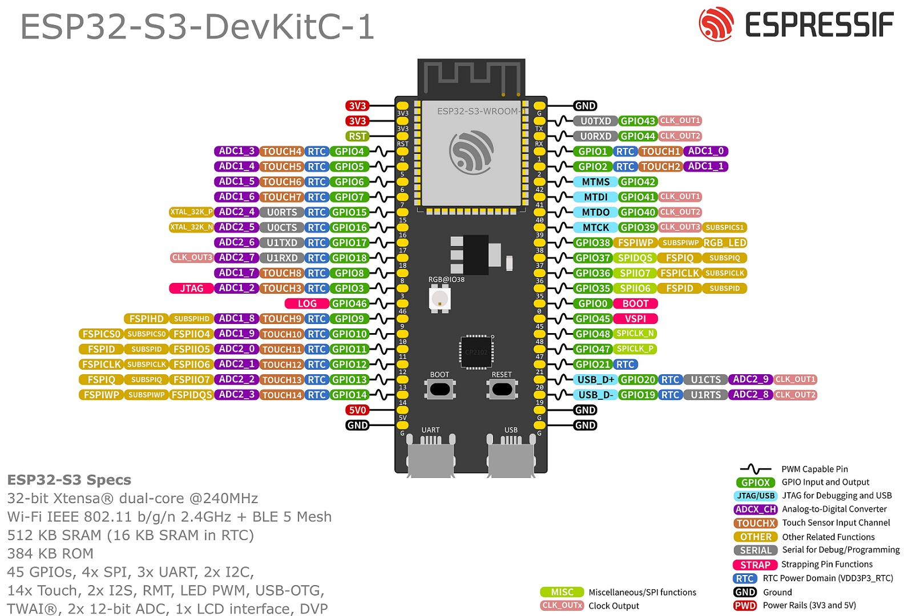
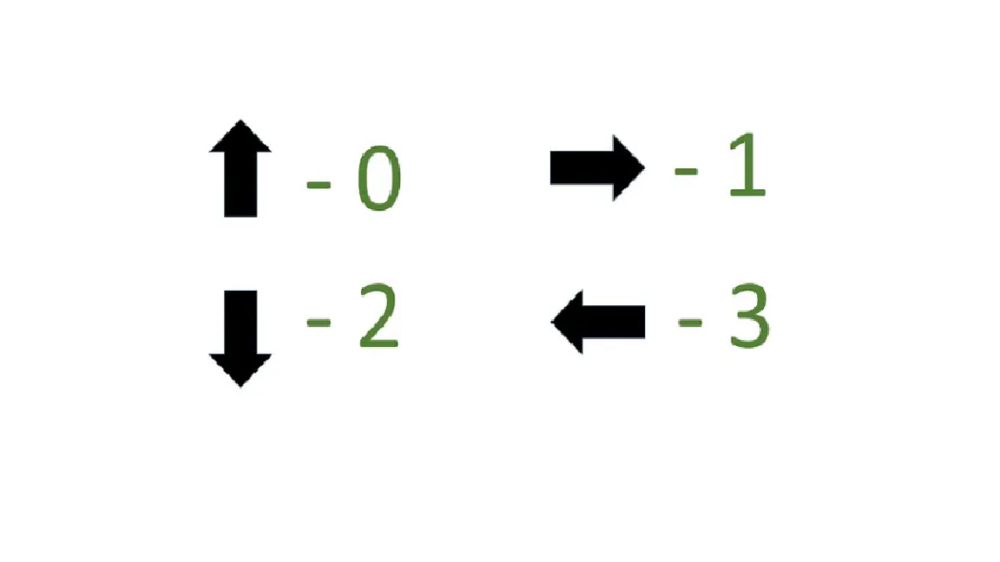
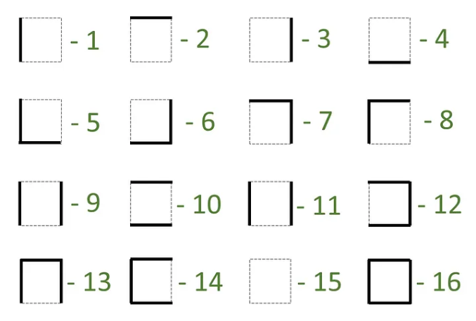

This project began as one of my earliest robotics builds: a small differential-drive Micromouse using an ESP32, N20 gear motors, wheel encoders, an MPU6050 for turn control, and three ultrasonic sensors for left / front / right wall detection. The goal was not just to solve a maze once, but to maintain an internal map and move cell-by-cell with repeatable control.
What makes the project interesting now is not the first version of the mouse, but the fact that I later revisited the code and rewrote several core pieces after understanding its weaknesses more clearly.

The repository still shows two stages of the project. The simulator code preserves the earlier version: walls stored as orientation-relative integer states, long conditional lookup trees, and flood-fill logic built around that representation. The hardware-integration code is the later rewrite: cleaner wall storage, reciprocal map updates, faster queue logic, and better turn handling for a real robot.


The rewrite was driven by four issues that mattered on the real robot: map consistency, turn drift, control-loop blocking, and path efficiency. These were not cosmetic cleanups - they changed the behavior of the robot materially.
setWall() helper that updates both cells immediately, so accessibility checks
no longer depend on fragile mirrored condition tables.
cellsArray integer states were replaced with WALL_N / E / S / W bitmasks.
That collapsed a long orientation-relative encoding tree into a compact direction map and
made isAccessible() a direct bit check instead of a wall-code lookup problem.
startAngle and turns to
startAngle ± 85°, which keeps each maneuver locally bounded and far more stable.
x * 16 + y, simplifying flood-fill propagation on the embedded side.
// absolute wall bits, not orientation-relative codes #define WALL_N 0x01 #define WALL_E 0x02 #define WALL_S 0x04 #define WALL_W 0x08 uint8_t walls[16][16] = {0}; void setWall(int x, int y, uint8_t dir) { walls[x][y] |= dir; // reciprocal wall update on neighbour }
// old: target based on accumulated prevAngle // new: target based on this turn only mpu.update(); float startAngle = mpu.getAngleZ(); float targetAngle = startAngle + 85.0; while (mpu.getAngleZ() < targetAngle) { mpu.update(); float correction = (targetAngle - mpu.getAngleZ()) * correctionFactor; Right(); }
Each maze step follows a simple loop: sense walls, update the map, repair local flood values if needed, choose the lowest-cost accessible neighbor, then execute motion using encoder-based forward travel and gyro-assisted turning. The logic is still intentionally lightweight, but it is much more disciplined than the original version.
The robot still has clear room to grow - the return-to-start / speed-run stage is not yet implemented - but the internal loop is now in much better shape for repeatable maze traversal.
The biggest embedded bottleneck in the original design was not the flood-fill itself; it was the control loop around it. Three sonar sensors sampled with heavy averaging create a large fixed delay before every navigation decision. Reducing that delay makes the robot noticeably more responsive without changing the maze algorithm at all.
| Old averaging | 5 pings × 30 ms × 3 sensors | 450 ms blocked |
| Current averaging | 3 pings × 20 ms × 3 sensors | 180 ms blocked |
| Queue encoding | single int cell id | x * 16 + y |
| Boundary walls | loaded at startup | known without sensing |
| Still missing | speed-run phase | future work |